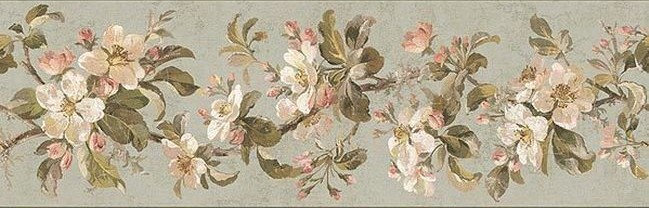
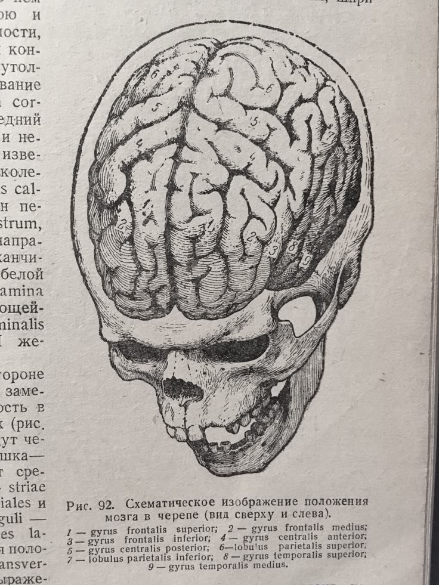
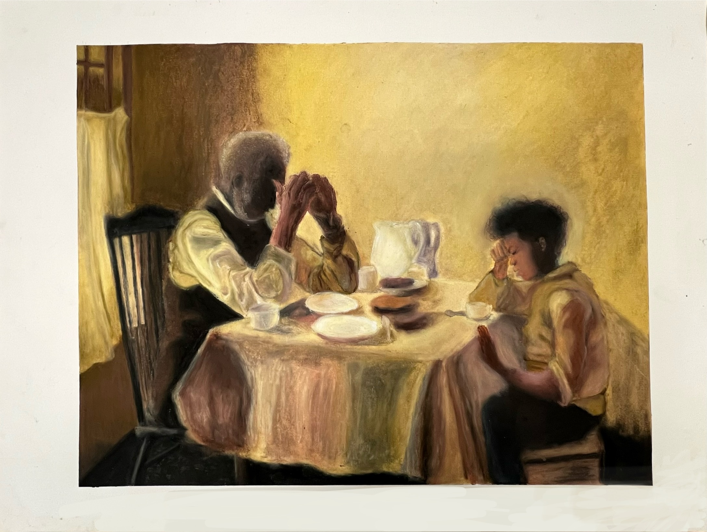

I am studying to become a medical illustrator in neurosurgery.

I have a dog named Winston that is 7 years old and a kitten named Vivienne that is 6 months old.
I like to create art in all mediums. These two pieces I made in highschool. One is a mastercopy of Henry Ossawa Tanner's "The Thankful Poor" done in oil pastel. The other is a self portrait in acrylic.

| Month | day | year |
|---|